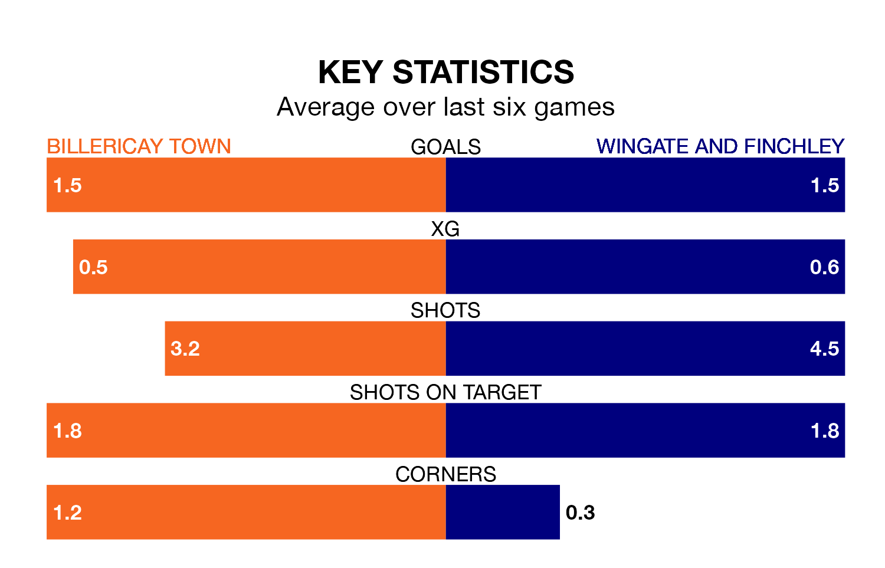

Billericay Town are on a terrible run ahead of hosting Wingate and Finchley at the AGP Arena on Saturday, with just one point collected from their last six games.
Billericay have picked up just one draw in their last six Isthmian Premier Division games, and face a Blues side whose last six games have brought two wins and three draws.
With 60 goals in 33 games so far this season, Wingate & Finchley are scoring more than average in the league with 1.8 goals per game. And they are conceding at an average rate, letting in 53 goals at a rate of 1.6 per game.
Billericay, meanwhile, are average scorers, with 1.6 goals per game. They have conceded 1.3 goals per game.
In the last 10 years, Billericay and Wingate & Finchley have played each other on 12 occasions. Billericay won seven of them, Wingate & Finchley four, and they drew once.
On average, Billericay scored 1.8 goals and the Blues 1.3 in those matches.
Their last meeting was on December 2, when Wingate & Finchley won 2-1 at home.
The Blues are fifth in the table after 33 games, of which they have won 17 and drawn five, earning 56 points.
Town are two places behind the away side in seventh, with 17 wins and four draws putting them on 55 points.
Billericay's last match was on March 16, a 4-1 loss against AFC Hornchurch.
Wingate & Finchley lost 1-0 against Bognor Regis Town last time out, also on March 16.
Updated: 10:19 (UTC), 22/03/24